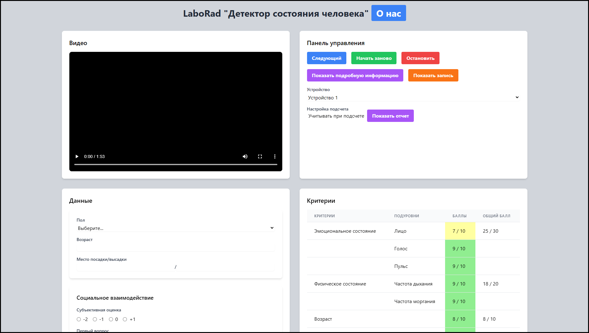
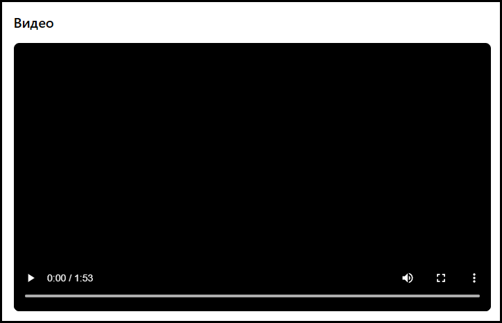
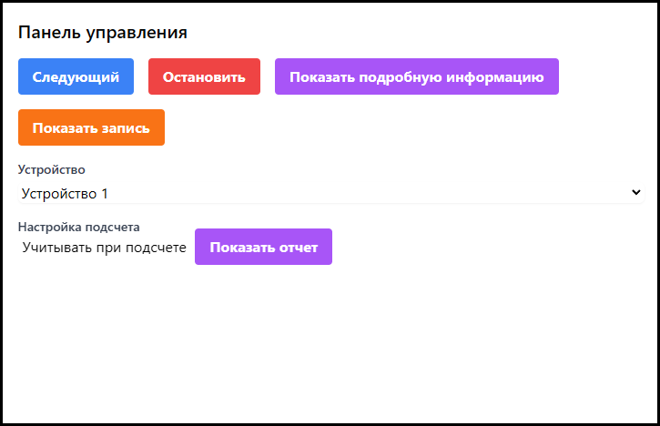
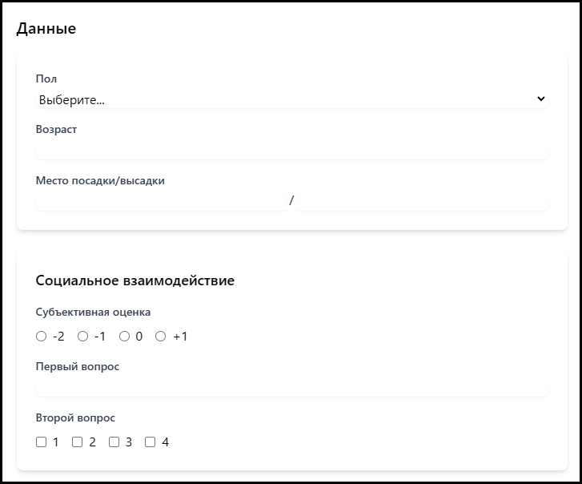

Основная документация
Доступ
Основной код доступен на нашем GitHub. Нашей командой написан специальный веб-интерфейс, позволяющий получить доступ к приложению практически из любого места. Публичный сервер доступен на http://tphl.duckdns.org.
Начало работы
В данной главе будет разобрана первая проверка.
Переход к следующей проверке. Для этого нажимаем кнопку Следующий в панели управления.
Выбор устройства. Для выбора устройства HSD Camera нажимаем в панели управления на список Устройства.
Ввод данных. Пользуясь разделом Данные, введите данные о проверяемом. Свою оценку внешности и впечатления введите в подраздел Субъективная оценка.
Проверка. Проверяя разделы Критерии и Графики проверьте результаты первично самостоятельно.
Вывод результатов. В панели управления выберите критерии, которые будут учитываться. Нажмите на кнопку Показать отчет для подведения итогов.
Интерфейс
Реализован на HTML с использованием CSS и JS. Ниже представлен скриншот версии 2024.12.13a
{kind=link}
В следующих разделах разберем каждый рабочий блок в приложении.
Видео
{kind=link}
В данный блок выводится видео с вашей камеры. Можно настроить громкость, включить полноэкранный режим.
Панель управления
{kind=link}
В этом блоке можно управлять проверкой, вывести отчет и другое.
Следующий - кнопка для завершения проверки этого человека и перехода к следующему.
Остановить - кнопка для остановки проверки.
Показать подробную информацию - кнопка для вывода на экран более подробной информации о проверке.
Показать запись - кнопка для вывода на экран записей с камер с прошлых проверок.
Устройство - выбор устройства HSD Camera с которого будет происходить съемка.
Настройки подсчета - включение/выключение некоторых факторов, которые влияют на итоговую оценку.
Показать отчет - используя данные из Настроек подсчета вывести на экран итоговую оценку проверки.
Данные
{kind=link}
В этом блоке можно ввести информацию о пассажире, такие как пункт отправления, пункт прибытия, пол, возраст и др. данные которые повлияют на итоговую оценку.
Пол - пол проверяемого.
Возраст - возраст проверяемого.
Место посадки/высадки - город отправления и прибытия проверяемого.
Субъективная оценка - личное отношение к внешности и манерам, возникающее у проверяющего.
Первый вопрос и Второй вопрос - вопросы, выбранные при настройке программы, которые должны быть заданы проверяемому.
Критерии
В данный блок выводятся данные все данные о проверяемом в виде таблицы.
Критерии - группы для подуровней
Подуровни - критерии, по которым происходит оценка
Баллы - оценка проверяемого по этому критерию
Общий балл - средний балл по этим критериям
Графики
Это раздел для вывода информации проверяемом - его пульсе, частоте дыхания и моргания, сезонность одежды и другие показатели в данный момент, предоставленные для удобства в виде графиков.
HSD Camera
HSD Camera - это камера, которая может крепиться на стену, висеть на проверяющем или стоять на подставке, позволяющая вести запись проверяемого. Состоит из платы Raspberry Pi, камеры к ней и аккамулятора.
Замена аккамулятора
oioioio